2 Instrument Variable for Screen Time
2.1 Charging as Instrument Variable
2.1.1 Impact of Battery Level on Screen Use
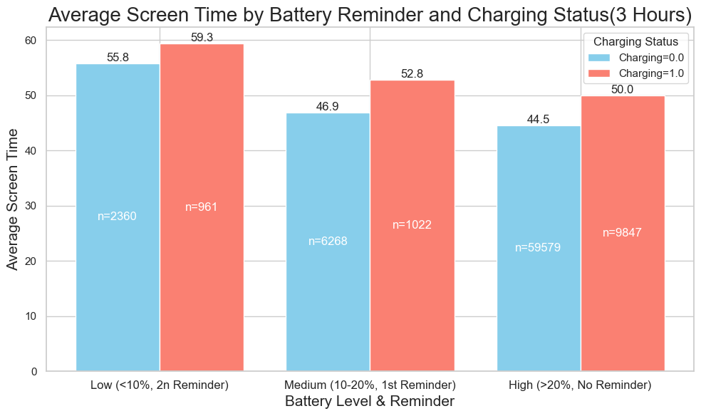
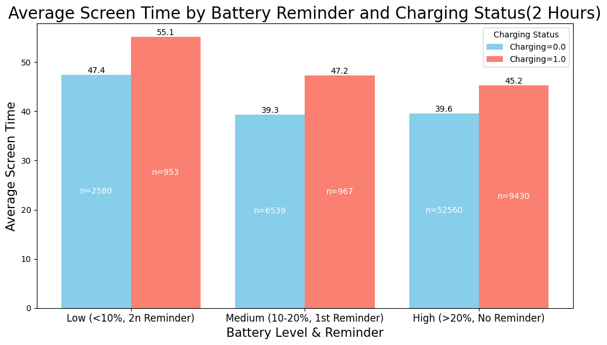
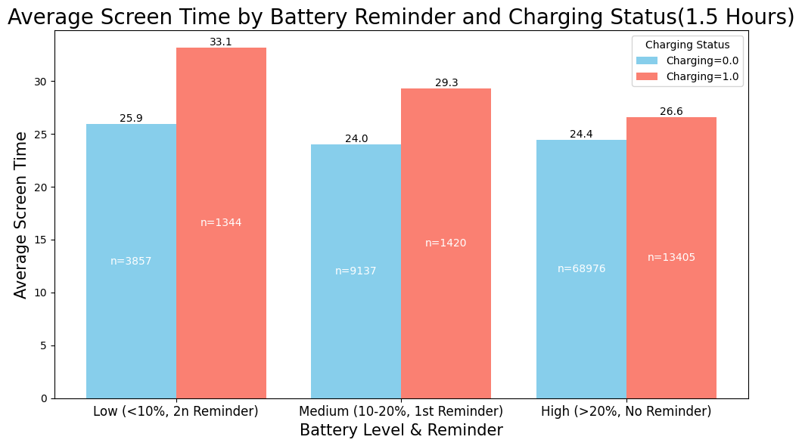
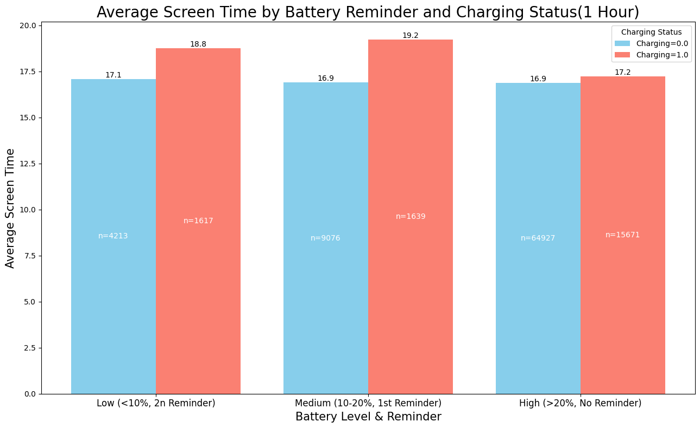
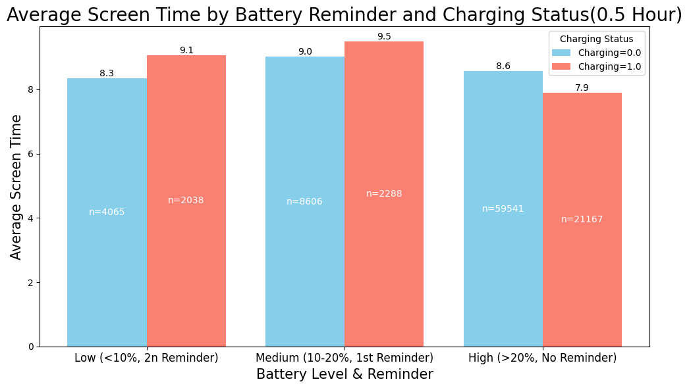
The figures show that charging may positively impact screen time. I tried to take charging as IV for screen time, however, the estimated coefficient is not significant, although it passed the relevance test:
Before Turning Point:
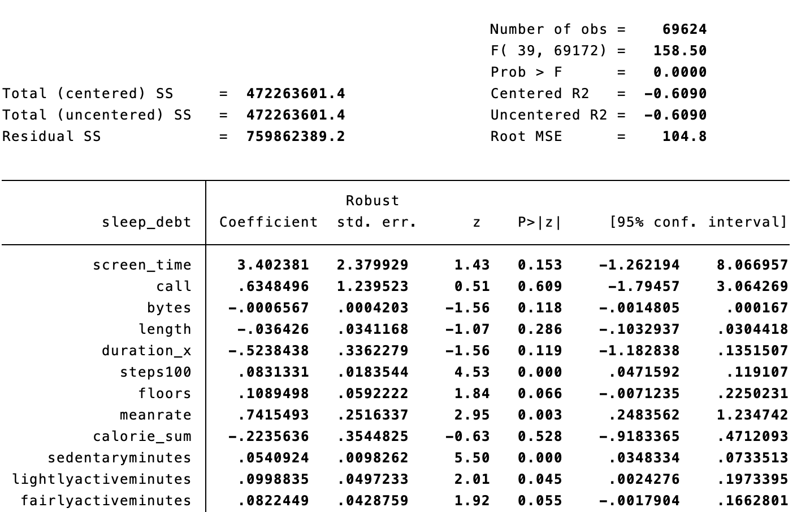
.png)
After Turning Point:
.png)
.png)
2.2 Battery as Instrument Variable
2.2.1 Impact of Battery Level on Screen Use
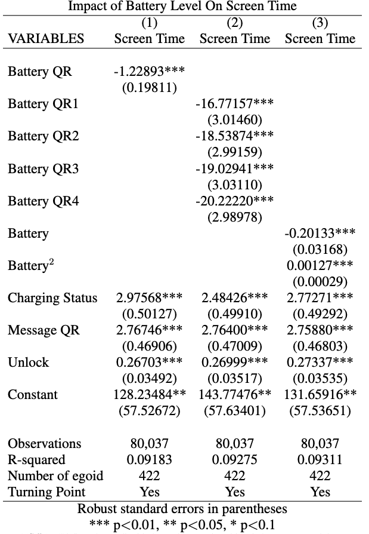
2.2.1.1 Visualization of the U-Shape Impact
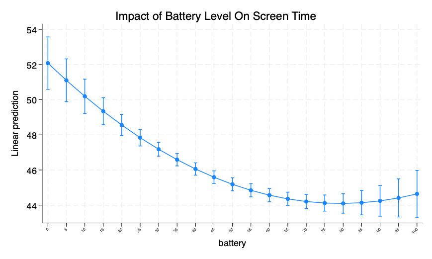
clear all
set maxvar 120000, permanently
set more off
import delimited "/Users/shaokangyang/Library/CloudStorage/OneDrive-Personal/Nethealth/Data/CNSA/combine/7/bt7_3hr.csv"
gen date2 = date(date, "YMD")
**********************************************
global id egoid
global t date2
global ylist sleep_debt
global mainIV c.screen_time##c.screen_time message_q c.screen_time#c.message_q unlock
global Call_Control call duration_x length bytes
global Fitness_Control steps100 floors sedentaryminutes lightlyactiveminutes fairlyactiveminutes veryactiveminutes lowrangecal100 fatburncal100 cardiocal100 peakcal100
global Network_Control friend_no parent_no sibling_no blank_no otherfamily_no romanticpartner_no acquaintance_no neighbor_no coworker_no stepsibling_no comemberorganization_no stepparent_no degree_centrality core_number trust position num_nodes num_edges duration_y contacts_y
global Other_Control naps naps_dur light_exposure insession##weekday##time_wakeuphour
global fe i.studyweeks
*Set data as panel data
sort $id $t
xtset $id $t
ivreghdfe $ylist $Fitness_Control $Network_Control $Other_Control $Call_Contro message_q unlock charging (c.screen_time##c.screen_time=c.battery##c.battery), absorb(egoid studyweeks) robust endog(screen_time)2.2.1.2 Impact of Screen Time on Sleep Debt
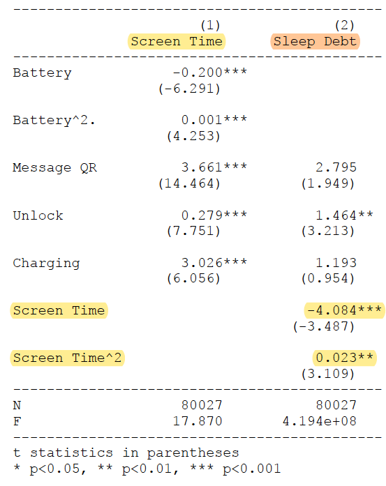
2.2.2 Evaluation of IV
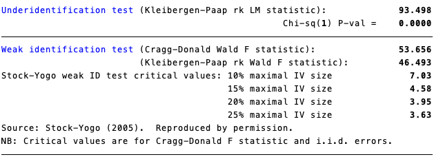
Underidentification Test (Kleibergen-Paap rk LM Statistic):
This test checks whether the instruments are correlated with the endogenous regressors—in the case, whether ‘battery_levels’ is correlated with ‘screen_time’ and ‘screen_time^2’. A failure to reject the null hypothesis would indicate that the instruments are not relevant, and hence the model is underidentified (meaning the IV approach cannot be validly used).
In the results, the Kleibergen-Paap rk LM statistic is 105.271 with a p-value of 0.0000, indicating strong rejection of the null hypothesis of underidentification. This means the instruments are likely relevant.
Weak Identification Tests (Cragg-Donald Wald F statistic and Kleibergen-Paap rk Wald F statistic):
These tests check whether the instruments are sufficiently correlated with the endogenous regressors. While the instruments may be correlated (not underidentified), they might not be strong enough to provide reliable estimates (weak instruments).
The critical values provided by Stock and Yogo help determine whether the instruments are weak. If the test statistic (Cragg-Donald or Kleibergen-Paap) is above the critical value for a given maximal IV size (size of a test for a given level of IV bias), the instruments are not considered weak.
In the case, the Cragg-Donald Wald F statistic is 57.995, and the Kleibergen-Paap rk Wald F statistic is 52.396. These are both above the highest listed Stock-Yogo critical value of 7.03 for a maximal IV size of 10%. This indicates that the instrument is not weak according to the Stock-Yogo weak identification test standards.
Interpretation:
The underidentification test indicates that the model is properly identified, meaning that there is a statistical relationship between the instruments and the endogenous variables.
The weak identification tests suggest that the instruments are strong, as indicated by the test statistics significantly exceeding the Stock-Yogo critical values.
Therefore, based on these diagnostics, it appears that the instrument (battery levels) is both relevant (related to the endogenous variable screen time) and strong (provides sufficient information to estimate the causal effect reliably). This lends credibility to the IV estimates obtained from the model. However, remember that these tests do not address other potential issues such as exogeneity (whether the instruments are correlated with the error term) and overidentification (having more instruments than endogenous variables, which can be tested with a different set of tests). Always consider the theoretical justification for the instruments in addition to these statistical tests.
2.2.3 Battery IV with Turning Point
2.2.3.1 IV Before Turning Point
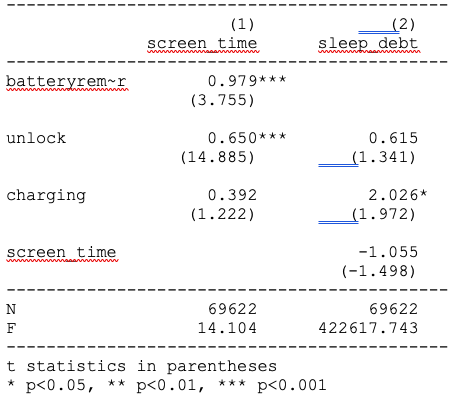
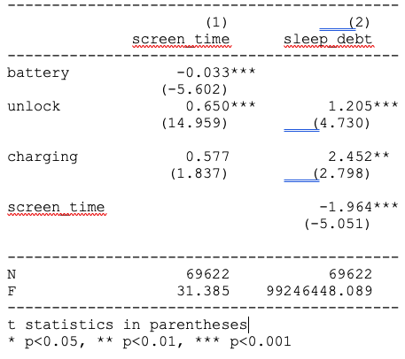
2.2.3.2 IV After Turning Point
3 Alternative IVs: Number of Contacts
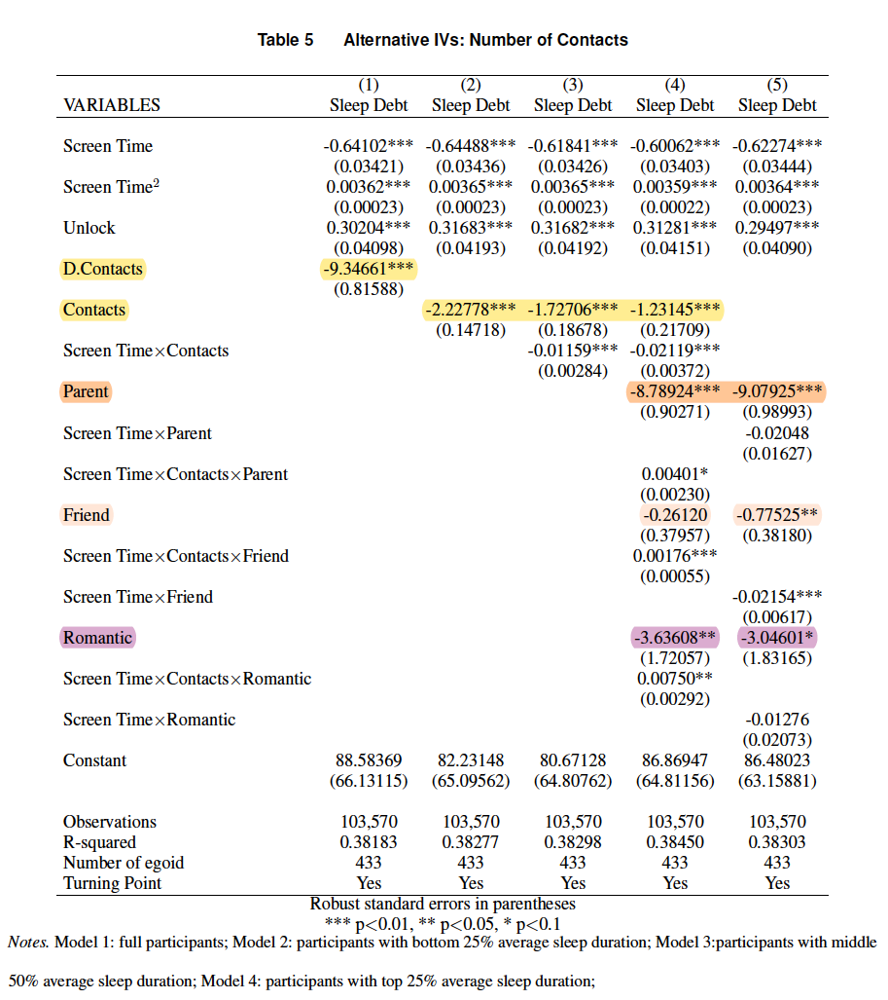
1 Social Network Control
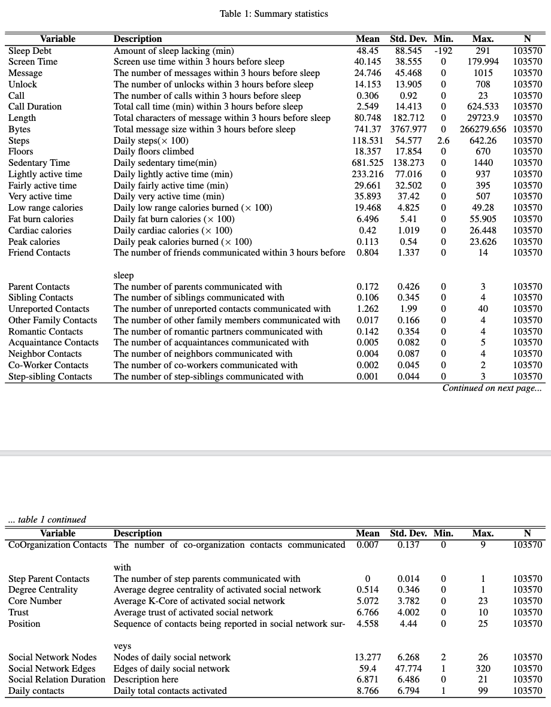
In this update, we try to find an instrument variable to justify the causal effect of screen time on sleep debt. First, we introduce the related variables:
80037 rows × 6 columns